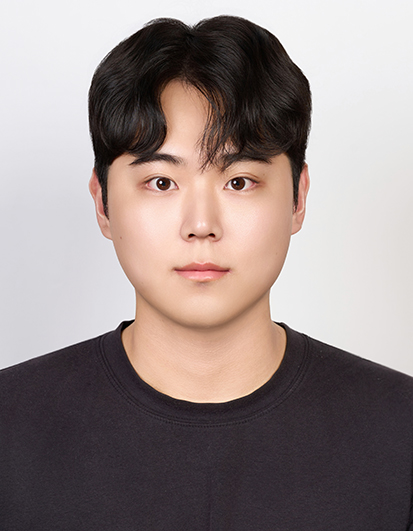

Minsu Kim
I am a second-year Ph.D. student in the School of Electrical Engineering at KAIST, advised by Prof. Junmo Kim. Before beginning my doctoral studies, I worked as a specialist at KIST and was a research intern at NAVER LABS, where I was mentored by Prof. Giseop Kim and Dr. Sunwook Choi. I received my M.S. from DGIST under the supervision of Prof. Kyong Hwan Jin and completed my undergraduate studies at Pusan National University.
My research agenda focuses on making foundation models fast, memory-efficient, and affordable across both training and inference. I approach this goal from a statistical and systems perspective, investigating low-bit and memory-efficient ML systems for scalable training and deployment.
Email | LinkedIn | Google Scholar | GitHub
Selected Publications
Inlier-Centric Post-Training Quantization for Object Detection Models
Minsu Kim, Dongyeun Lee, Jaemyung Yu, Jiwan Hur, Giseop Kim, and Junmo Kim
International Conference on Learning Representations (ICLR), 2026